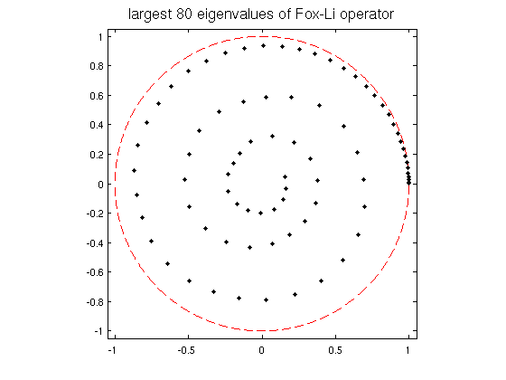

Eigenvalues of the Fox-Li integral operator
Toby Driscoll and Nick Trefethen, 7 October 2010
(Chebfun example integro/FoxLi.m)
In the field of optics, integral operators arise that have a complex symmetric (but not Hermitian) oscillatory kernel. An example is the following linear Fredholm operator L associated with the names of Fox and Li (also Fresnel and H. J. Landau):
v(x) = sqrt(i*F/pi) int_{-1}^1 K(x,s) u(s) ds.L maps a function u defined on [-1,1] to another function v = Lu defined on [-1,1]. The number F is a positive real parameter, the Fresnel number, and the kernel function K(x,s) is
K(x,s) = exp(-i*F*(x-s)^2).
To create the operator in Chebfun, we define the domain and kernel, then use the FRED function to build L:
d = domain(-1,1); F = 64*pi; % Fresnel number K = @(x,s) exp(-1i*F*(x-s).^2 ); % kernel L = sqrt(1i*F/pi) * chebop(@(u) fred(K,u)); % Fredholm integral operator
Computing the 80 eigenvalues of largest complex magnitude requires just a call to EIGS with the 'lm' option:
tic
lam = eigs(L,80,'lm');
toc
Elapsed time is 47.026054 seconds.
Finally, a wonderful (and not fully understood) pattern emerges when we plot the results:
x = chebfun('x'); clf, plot(exp(1i*pi*x),'--r','linewidth',1.5) hold on, plot(lam,'k.','markersize',12) title('largest 80 eigenvalues of Fox-Li operator','fontsize',16) axis equal, axis(1.05*[-1 1 -1 1]), hold off
References:
T. A. Driscoll, Automatic spectral collocation for integral, integro-differential, and integrally reformulated differential equations, J. Comput. Phys. 229 (2010), 5980-5998.
A. G. Fox and T. Li, Resonant modes in a maser interferometer, Bell System Technical Journal 40 (1961), 453-488.
L. N. Trefethen and M. Embree, Spectra and Pseudospectra, Princeton University Press, 2005 (Chapter 60).